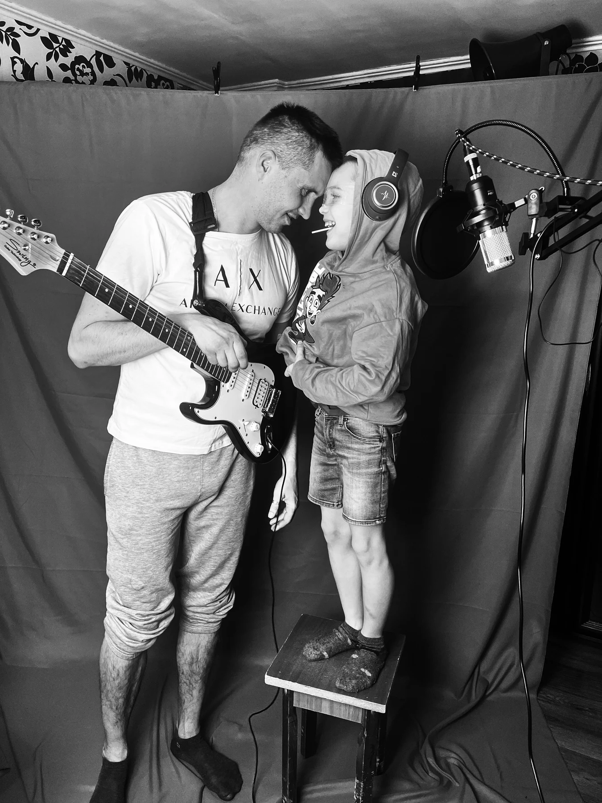

ПРОЯВЛЕННЫЙ.
Живи. Люби. Твори.
Интервью, музыка, творчество и моменты моей жизни. Всё, чем хочется делиться.

ЖИЗНЬ БЕЗ СЦЕНАРИЯ / 001Давайте
знакомиться.

Привет! Я Андрей.
Люблю жизнь, интересных людей и всё, что связано с творчеством.
«Проявленный» — мой личный проект. Здесь я делюсь историями, записываю интервью, создаю музыку и просто показываю моменты своей жизни.
Моя страница ВКонтакте ↗У каждого
своя история.
Встречи с людьми, которым есть чем поделиться. Разговоры о жизни, опыте и том, что действительно важно.

Моя музыка.
Иногда мысли превращаются в строки, а строки — в песни.
МОЕЙ
ЖИЗНИ.ЖИВИ. ЛЮБИ. ТВОРИ.
Этот раздел готовится к запуску. Позже здесь можно будет слушать мои композиции прямо на сайте.
Жизнь в кадре.
Не всё интересное происходит перед камерой. Иногда самые обычные моменты становятся самыми ценными.
И это ещё не всё.
Помимо «Проявленного», я развиваю и другие проекты.
Дизайн, реклама, SMM и цифровые решения.
Будем на связи.
Есть интересная история, идея или предложение? Напишите мне.